番外編：監視を止めたいときは？
「もう通知はいらない」という時は、GAS画面の左にある時計マーク（トリガー）を押して、設定されているトリガーをゴミ箱マークで消します。
スプレッドシートの講師番号を消すだけでもOKです。
pamokaは、DMM英会話の講師ページを定期チェックして「予約可」が増えたときに通知する、個人開発の無料サポートツールです（非公式）
登録したアドレスに通知メールが届きます！
このチュートリアルでは、GoogleのGAS(Google Apps Script)の設定方法を紹介します
※講師のプロフィールページのURLの一番最後にある数字です。下の画像を参考にしてね
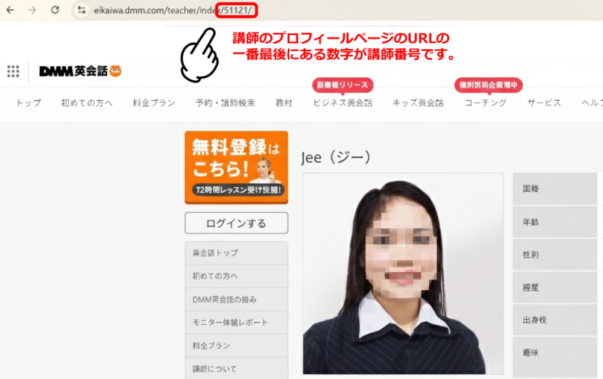まずは、データを記録する「台帳」を作ります。
【スプレッドシートの開き方】
Googleの画面右上にある「点々のマーク」から、緑色の「スプレッドシート」を選んでね。
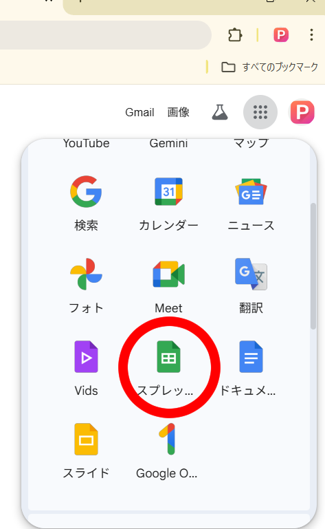開いたら「空白（＋マーク）」を押して新しいシートを作ります。
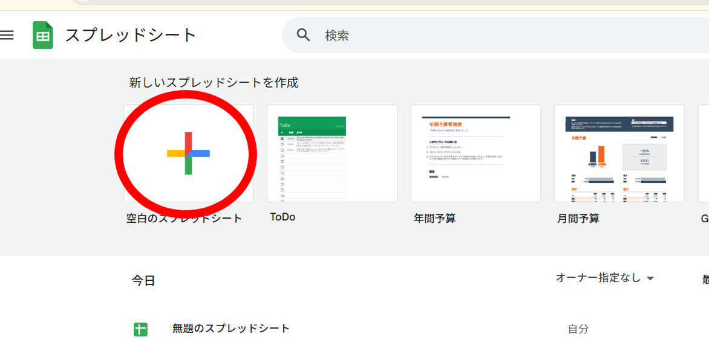※シートには何も書かなくて大丈夫。
プログラムを動かすために、このシートの「住所（ID）」が必要です。
【IDの見つけ方】
上のURLを見てみて、/d/ と /edit の間にある、長〜い英数字がIDです！
これをコピーして、あとでプログラムに貼り付けます。
1. スプレッドシートのメニューから「拡張機能」→「Apps Script」を選んでクリック。
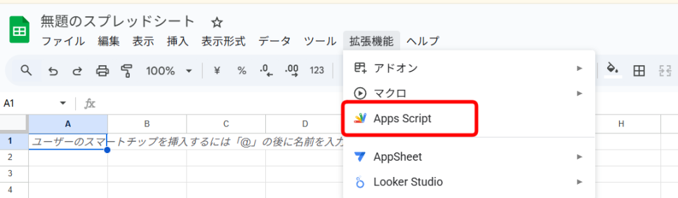2. GASの画面が開きます。
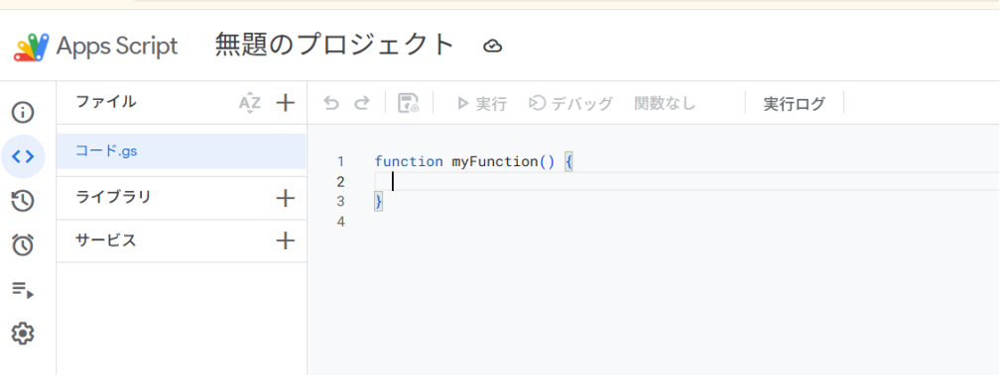3. 元から書いてある文字を全部消します。
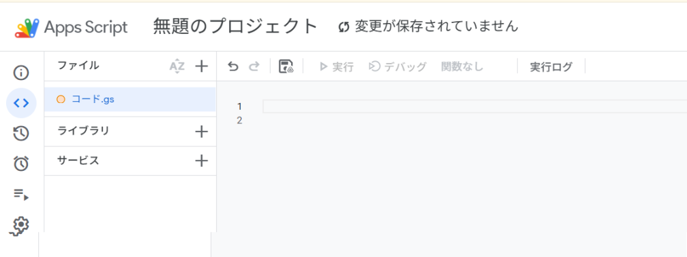4. 下のボタンを押して、GASのコードをコピーします。
5. GASに貼り付け（Ctrl + V）てね！
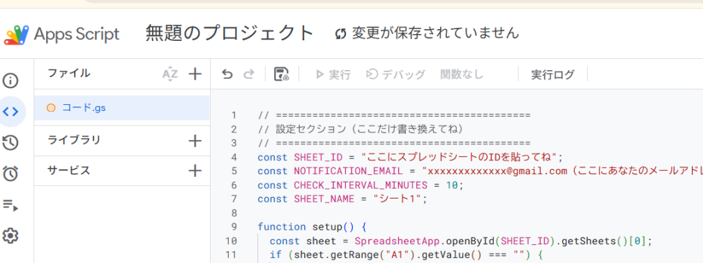1.コードの一番上にある「シートID」「メールアドレス」を自分のものに書き換えます。
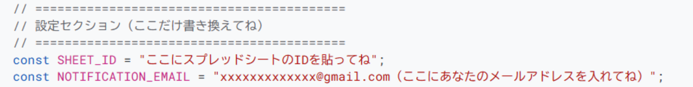2.コードを保存します。
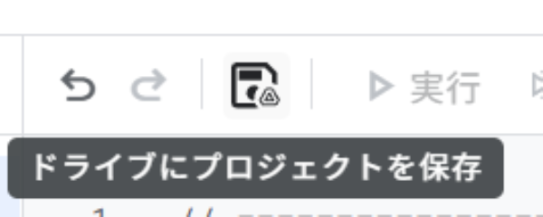1. 画面上のメニューから setup を選んで、「実行」ボタンを押してね。
⚠️ ここで「承認が必要」という画面が出たら：
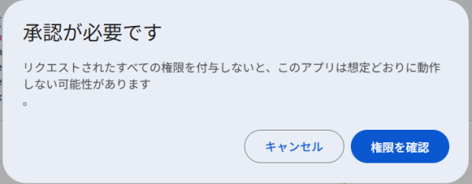権限を確認 → 自分のアカウント → 詳細 →安全ではないページに移動→「許可」の順にクリックしてね。
※自分で作ったプログラムだから安全です！怖がらないで大丈夫。
①自分のアカウントを選択。
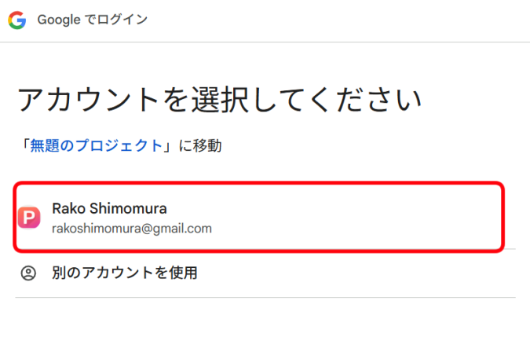②「詳細」をクリック。
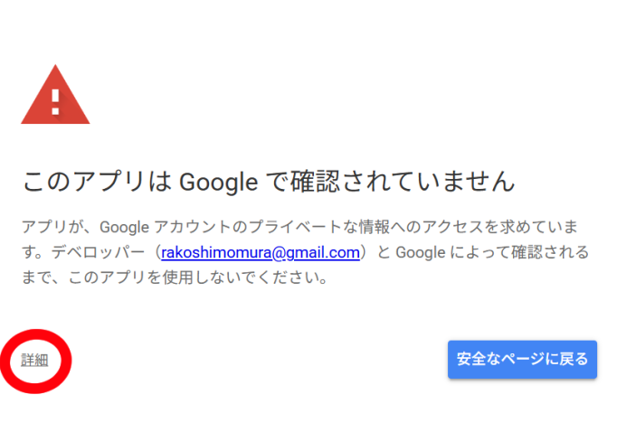③「無題のプロジェクト（安全ではないページ）に移動」をクリック。
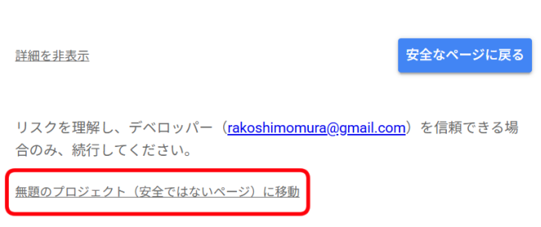④小さな別ウィンドウが表示される。
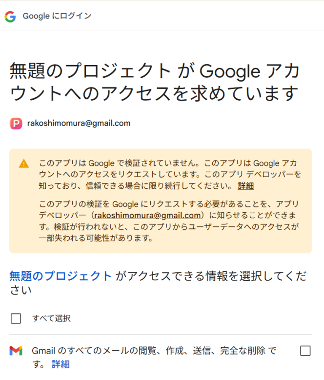⑤権限を付与する。
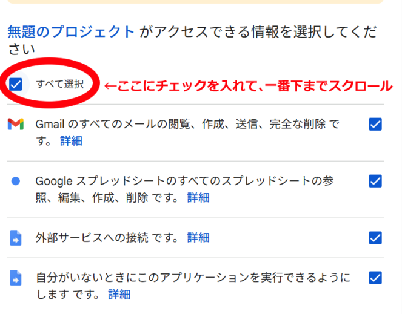⑥「続行」をクリック。
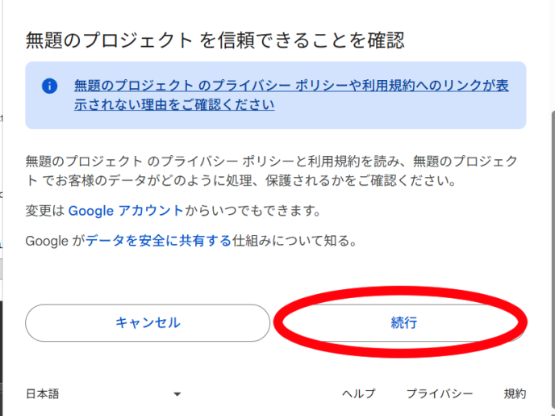⑦GASの画面でプログラムが開始されます。
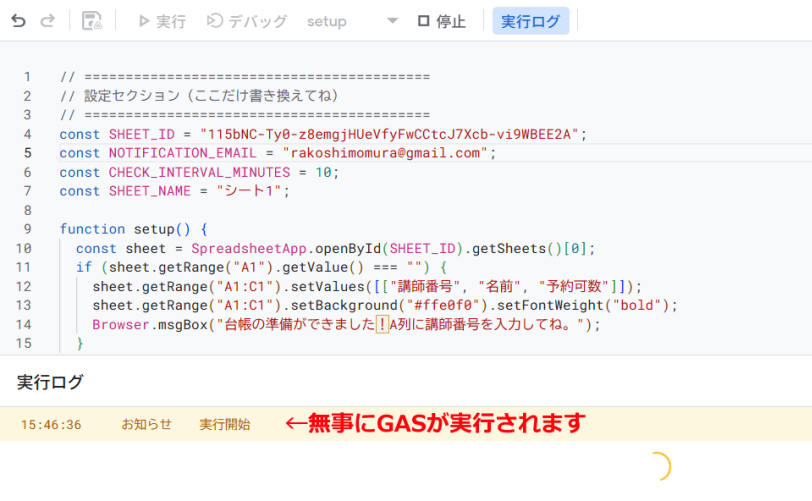⑧スプレッドシートのタブに移動します。
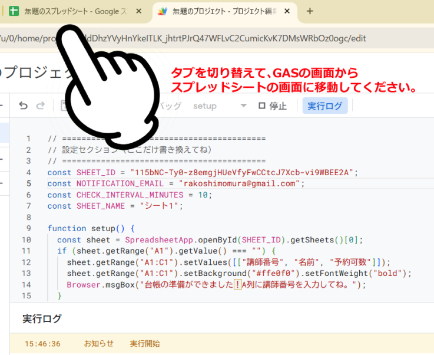⑨「「準備完了」の表示が出ているのでOKをクリックします。
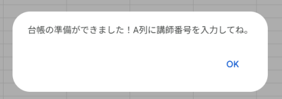2. スプレッドシートに「講師番号」などの見出しが自動で作られます！
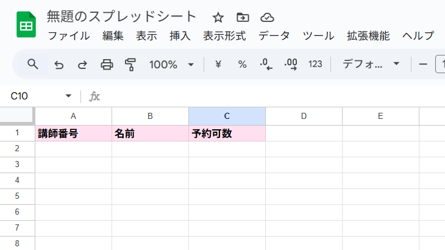1. スプレッドシートのA列に、監視したい「講師番号」を入力します。
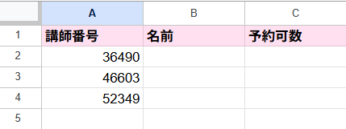最後に、プログラムが自動で動くようにタイマーをセットします。
1. GASの画面に戻って、今度は setupTrigger を選択。
2. 左側の「▷ 実行」ボタンを押します。
✨ これで設定完了！
実行ログに「⏰ 監視を開始しました！」と出れば、あとはブラウザを閉じても10分おきに勝手にチェックしてくれます。
【スプレッドシートに名前を付けよう！(任意)】
<ら準備完了。 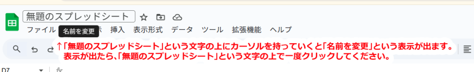※名前は付けなくても大丈夫ですが、次回スプレッドシートを開く時どのシートにGASのコードを記載したか分からなくなるのを防ぐために名前を付けておくと便利です。
「もう通知はいらない」という時は、GAS画面の左にある時計マーク（トリガー）を押して、設定されているトリガーをゴミ箱マークで消します。
スプレッドシートの講師番号を消すだけでもOKです。